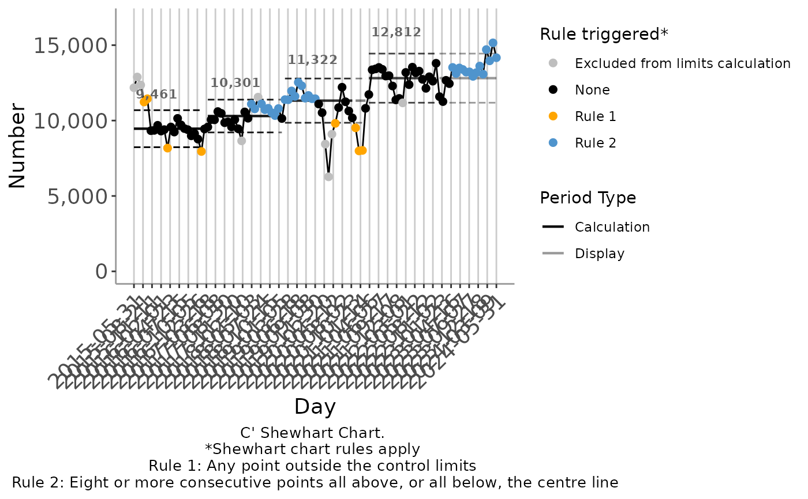
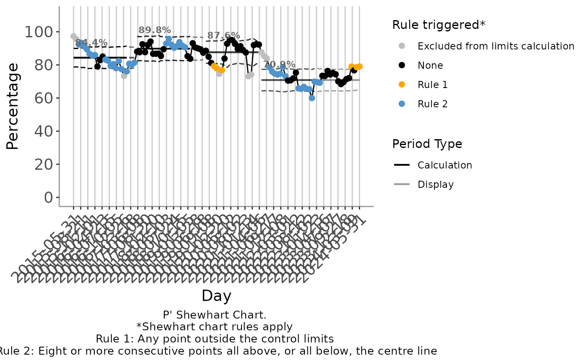
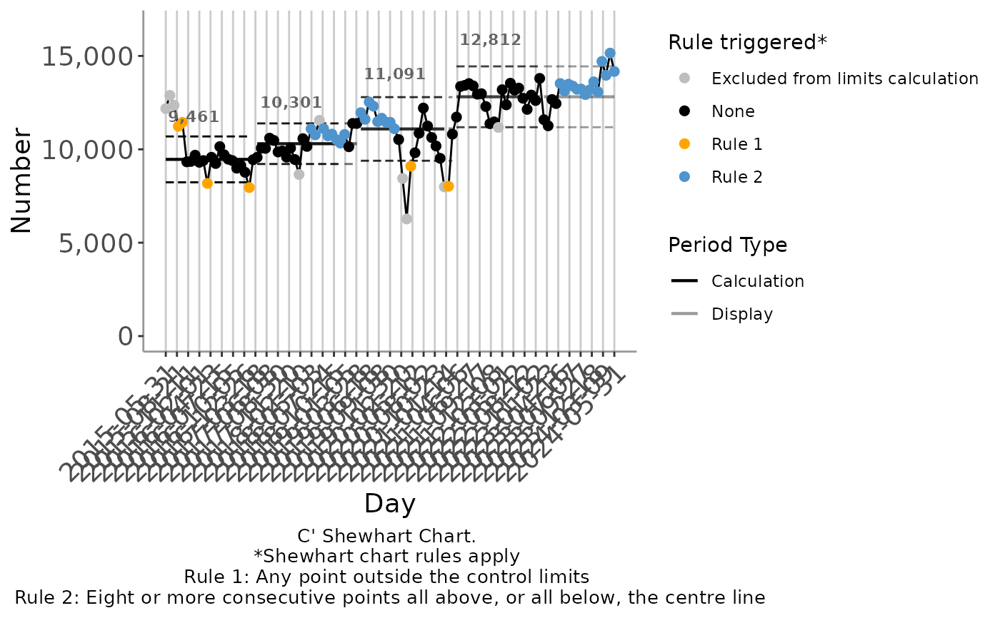

Plot SPC charts with automated limit recalculation
plot_auto_SPC.Rdplot_auto_SPC() creates a statistical process control chart from a
dataframe, applying the Stable Shift Algorithm to automate recalculation of
control limits.
Usage
plot_auto_SPC(
df,
x,
y,
n,
chartType = NULL,
periodMin = 21,
baseline = NULL,
runRuleLength = 8,
noRecals = FALSE,
recalEveryShift = FALSE,
noRegrets = TRUE,
overhangingReversions = TRUE,
maxNoOfExclusions = 3,
highlightExclusions = TRUE,
mr_screen_max_loops = 1L,
rule2Tolerance = 0,
floatingMedian = "no",
floatingMedian_n = 12L,
plotChart = TRUE,
showLimits = TRUE,
showMR = TRUE,
writeTable = FALSE,
verbosity = 0L,
log_file_path = NULL,
title = NULL,
subtitle = NULL,
use_caption = TRUE,
override_x_title = NULL,
override_y_title = NULL,
override_y_lim = NULL,
x_break = NULL,
x_date_format = "%Y-%m-%d",
x_pad_end = NULL,
extend_limits_to = NULL,
r1_col = "orange",
r2_col = "steelblue3",
point_size = 2,
line_width_sf = 1,
includeAnnotations = TRUE,
basicAnnotations = getRversion() < "4.3.0",
annotation_size = 3,
align_labels = FALSE,
flip_labels = FALSE,
upper_annotation_sf = NULL,
lower_annotation_sf = NULL,
annotation_arrows = FALSE,
annotation_arrow_curve = 0.3,
override_annotation_dist = NULL,
override_annotation_dist_P = NULL
)Arguments
- df
A data frame. For an XMR, C or C' chart, must have columns for:
the subgrouping variable, to be plotted on the horizontal axis, (x);
the variable of interest to be plotted on the vertical axis (y);
and optionally, a title and subtitle for the plot.
For a P or P' chart, must have columns for:the subgrouping variable, to be plotted on the horizontal axis, (x);
the total count or denominator (n);
the count meeting criteria, or numerator (y);
and optionally, a title and subtitle for the plot.
- x
Name of column (passed using tidyselect semantics) to use as subgroups on the horizontal axis of the chart.
- y
Name of column (passed using tidyselect semantics) to use as:
the variable to be plotted for XMR charts,
count (plotted on the vertical axis) for C and C' charts,
numerator of the proportion (plotted on the vertical axis) for P and P' charts.
- n
Name of column (passed using tidyselect semantics) to use as denominator for P and P' charts.
- chartType
The type of chart you wish to plot. Available options are: "XMR", "MR", "C", "C'", "P", "P'".
- periodMin
The minimum number of points (subgroups) per period, i.e. the minimum number of points required to form control limits.
- baseline
Integer, overrides periodMin for the first calculation period only, if specified
- runRuleLength
The minimum number of consecutive points above or below the centre line constituting a shift (or "rule 2") break.
- noRecals
Boolean - if TRUE, do not recalculate control limits, instead extend limits calculated from the first periodMin points.
- recalEveryShift
Boolean - whether to bypass the Stable Shift Algorithm and simply re-establish limits at every shift rule break (respecting periodMin)
- noRegrets
Boolean signifying which version of the algorithm should be used. Defines whether limits can change as more data is added or not.
- overhangingReversions
Boolean determining whether rule breaks in the opposite direction to a rule break triggering a candidate recalculation prevent recalculation even if they overhang the end of the candidate calculation period. Set to FALSE only with noRegrets = FALSE.
- maxNoOfExclusions
The maximum number of extreme points to exclude from limit calculations.
- highlightExclusions
Boolean signifying whether excluded points are greyed out.
- mr_screen_max_loops
Integer or Inf specifying maximum number of times to recursively ignore mr values above the upper range limit when calculating xmr limits. Note this does not affect the calculation of the upper range limit on the mr chart.
- rule2Tolerance
Minimum difference between a point's vertical position and the centre line to count as "on the centre line" for the purposes of shift rule breaks
- floatingMedian
Whether to add a floating median line to the chart, calculated based on the final floatingMedian_n data points on the chart: "no" - do not display a floating median, "yes" - display a floating median, "auto" - display a floating median if and only if there is at least one point that is part of a shift rule break in the final floatingMedian_n data points on the chart.
- floatingMedian_n
The number of points to use for calculation of the floating median, if present.
- plotChart
Boolean specifying whether to plot the chart. If not, the data is returned with centre line, control limits and other analytic output appended as columns.
- showLimits
Boolean controlling whether or not to display centre line and control limits
- showMR
Logical controlling whether the moving range chart is included in XMR chart
- writeTable
Boolean specifying whether to save the data as a CSV (useful for doing lots of charts at a time).
- verbosity
Integer 0-2 specifying how talkative the algorithm is in the standard output log; the higher the number the more information is provided, none if 0.
- log_file_path
if not NULL (the default), path to save log file to. The file extension provided (.rds or .csv) determines the type of file the log data is saved to. Full log data is saved, regardless of verbosity.
- title
Optional string specifying chart title. Overrides df$title.
- subtitle
Optional string specifying subtitle. Overrides df$subtitle.
- use_caption
Boolean controlling whether the caption is displayed.
- override_x_title
String specifying horizontal axis label.
- override_y_title
String specifying vertical axis label.
- override_y_lim
Optional numeric specifying upper limit of the vertical axis.
- x_break
Optional numeric specifying spacing of horizontal axis breaks.
- x_date_format
Optional string format for date labels on horizontal axis. Passed to scales::date_format.
- x_pad_end
Optional, specifies a minimum end point for the horizontal axis.
- extend_limits_to
Optional, specifies a point on the horizontal axis to extend the final limits out to
- r1_col
Highlight colour for breaks of rule 1 (points outside the control limits)
- r2_col
Highlight colour for breaks of rule 2 (shifts)
- point_size
Size of plot points, defaults to 2. See aes_linetype_size_shape for more details.
- line_width_sf
Numeric scale factor for plot line widths.
- includeAnnotations
Boolean specifying whether to show centre line labels
- basicAnnotations
Boolean specifying whether to force use of basic annotation positioning. When TRUE, suggested packages ggrepel and ggpp are not required, but annotation arrows are not supported. Defaults to TRUE for R versions prior to 4.3, FALSE otherwise.
- annotation_size
Text size for centre line labels
- align_labels
Boolean specifying whether or not to align centre line labels at a fixed vertical position
- flip_labels
Boolean specifying whether or not to place centre line labels on different sides of the centre line depending on the direction of change from the previous period
- upper_annotation_sf
Numeric scale factor specifying upper vertical position of centre line labels as a multiple of the upper control limit
- lower_annotation_sf
Numeric scale factor specifying lower vertical position of centre line labels as a multiple of the lower control limit
- annotation_arrows
Boolean specifying whether or not to display arrows connecting centre line labels to the centre line they refer to
- annotation_arrow_curve
Numeric curvature of the annotation arrows
- override_annotation_dist
Deprecated
- override_annotation_dist_P
Deprecated
Examples
# Using a C' chart to track changes in the count of monthly attendance
plot_auto_SPC(
ed_attendances_monthly,
chartType = "C'",
x = Month_Start,
y = Att_All
)

#Using a P' chart to track changes in the percentage admitted within 4 hours
plot_auto_SPC(
ed_attendances_monthly,
chartType = "P'",
x = Month_Start,
y = Within_4h,
n = Att_All
)

#using a runRuleLength of 7 when tracking monthly attendance
plot_auto_SPC(
ed_attendances_monthly,
chartType = "C'",
x = Month_Start,
y = Att_All,
runRuleLength = 7
)
